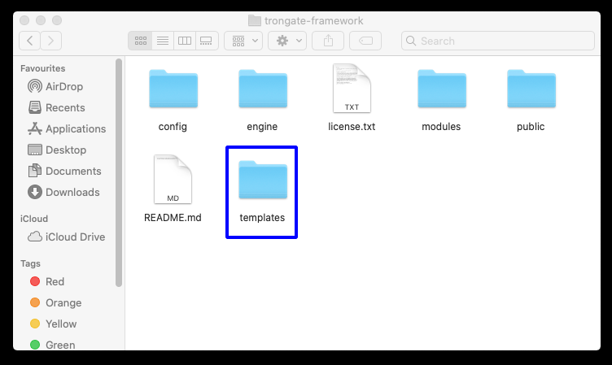
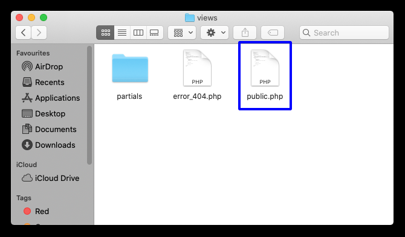
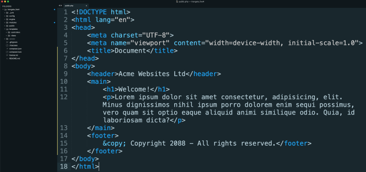

There now follows some instructions on how to create a basic HTML template, within the context of the Trongate framework. The example provided here will be basic but functional.
The Trongate framework has a module called 'templates'. This module exists at the root directory level. The 'templates' module has the same general structure and features of any ordinary module. So, all the functionality that you'd expect to see in an ordinary Trongate controller file is available from inside the 'Templates.php' controller file. As well as having a 'controllers' directory, the 'templates' module also has a 'views' directory.

Now you know where the templates are to be stored. So, let's create an HTML template!
The first part of building your own template is to come up with a meaningful and sensible name for your website template. A meaningful name is a name that tells you something about where the template appears and/or how the template has been built. For example, if the template happens to use a CSS framework like Bootstrap or Tailwind then it may be helpful to include those CSS framework names a part of your template name. Examples of good template names (in snake_case) are:
In case you're wondering, the name of the template for the webpage that you are viewing is 'docs_template'.
Let's assume that you have decided to call your template 'public'. With that decision made, you should now go into your 'templates' module and then open up your 'Templates.php' controller file.
Your goal here is to add a new method onto the 'templates' controller. This new method will be used to load your template. Below is an example of the basic syntax required to load a custom HTML template. In this example, the name of the template will be 'public':
function public() {
load("public");
}
As you can see, our method is simple and - in this example - it contains only one line of code. The line of code, contained within our method, calls upon Trongate's inbuilt load() method. The load() method initiates a request to serve a view file called 'public.php'. This view file should be created and stored inside the views directory of our 'templates' module.
Now, create a file named public.php and store it inside the "views" directory, within your "templates" module. Your view file should contain the HTML code for generating an HTML webpage.

The precise code that goes onto your HTML template is a matter for you to decide. Hopefully, you'll be able to design templates that look nice! For the purposes of demonstration, below is very a basic example of a template view file.

Now, you've created a template. In the next page you'll learn how to load your template from any existing Trongate module.